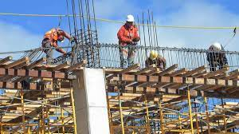

CONSTRUCCION
La formación que ofrece la carrera de Técnico en
construcción permite al egresado, a través de la
articulación de saberes de diversos campos, realizar
actividades dirigidas a la: aplicar los conocimientos
adquiridos en diversas situaciones del ámbito social,
económico y ambiental, obtener conocimientos en las
diferentes disciplinas para continuar sus estudios a
nivel superior o auto-emplearse, dibujar planos
constructivos y arquitectónicos manualmente o
empleando un software, verificar la calidad de los
materiales empleados, supervisar y coordinar el
desarrollo de los procesos constructivos de la obra,
verificando que se realicen de acuerdo con las
especificaciones y procedimientos establecidos en el
proyecto, realizar y supervisar instalaciones
hidrosanitarias, eléctricas , de gas y especiales en una
casa habitación considerando las eco-tecnologías que
le permitan el cuidado de la energía y ahorro del agua,
realizar levantamientos y trazo de predios
topográficos, analizar los precios unitarios de los
conceptos de obra de acuerdo con las
especificaciones del proyecto para su integración en el
presupuesto y programación de obra, elaborar el
programa de trabajo para una óptima ejecución de
obra.